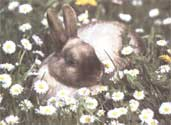

Cats, Dogs And Happy Tails
The history of March, spring temperatures and special sky events for spring.
By Emily Miller
February/March 1993
PET HEALTH
Practtical solutions to common pet problems
Cats and dogs, like their human friends, are more susceptible to disease when their immune systems are low. In addition to viral infections like kennel cough in dogs and distemper in cats, pets are more prone to parasitic infections like roundworm, tapeworm, and even Lyme disease when their immune systems are weak.
Stress, lack of exercise, and poor diet can all lower your pet's resistance. Conversely, strengthening your pet's body inside and out will boost your cat's or dog's natural internal defense system. The importance of exercise, fresh air, and healthful food cannot be understated. You can also add herbs to their meals in small amounts: Myrrh increases white blood cell production, goldenseal acts as a natural antibiotic, and garlic purifies the blood and boosts the immune system to help your cat or dog stay healthy.
Of course, if you notice a change in your animal's behavior, such as listlessness or lack of appetite, a graying of the gums, or problem with the skin or stool, see your veterinarian immediately. Remember, though, if your pet is placed on antibiotics, these drugs can deplete his or her body of vitamin C and create an imbalance in the natural, helpful bacteria of the intestinal tract. Supplementing with vitamin C, as well as B complex vitamins, will help your pet cope with the stress of feeling sick. Live-culture yogurt will restore intestinal bacterial balance.
A happy and healthy animal is a commitment, but as all pet owners know, one that is paid back many times over by the love you receive.
A special note to Kathy Rasche who thoughtfully wrote in to let me know that adding pineapple to your dog's diet will help keep him from eating his own feces. She suggested this as a natural alternative to MSG. Thanks! I have never heard of this remedy before. To all dog owners who have this problem with their pet: Please write in and let me know how it works.
Dear Ms. Miller.
We live in Ohio and have a St. Bernard and an Australian Shepherd. Buster, our St. Bernard, started having seizures when he was 14 months old. We've called his breeders and they said they've never experienced seizures in any of their Saints. (Buster came from a litter of 10.) A couple of vets in town believe it's epilepsy, but we're not totally convinced of this.
Also, Buster's ears get infected a lot-right now we're taking him to town once a week to get them cleaned. He's not shaking his head as much, so we feel this is working. Still, if you have some free time, we would appreciate any information that you have on this problem.
-Lisa More land and Doug Kniesly
Scio, Ohio
Dear Lisa and Doug,
The two dogs I had growing up were St. Bernards. My family's first Saint, Boozer, began having seizures at the age of five. He was very large, about 220 pounds, so as you can imagine, watching him have a seizure was a very scary experience.
Dogs can also suffer seizures due to worms, allergies, hypoglycemia, poisons, or brain disease. It's imperative to bring Buster to the vet to discern the cause.
Epilepsy can occur in young dogs, such as Buster, because of in-breeding or poor health of the mother during pregnancy, which may be why your breeder is denying knowledge of the problem. In terms of naturopathic solutions, it may help to de-toxify Buster's surroundings and put him on a diet that excludes all commercial foods containing preservatives, colorings, or additives. Sometimes going vegetarian-a big task with a Saint Bernard, I know-can alleviate the problem. Expect dietary changes to take a couple of months to take full effect.
Dr. Pitcairn and other naturopathic vets also recommend a full-spectrum B complex vitamin in the 20 to 50 mg. level to help with nervous-system functioning. Vitamin C, Lecithin, and chelated zinc will also help.
Urge dogs, such as the St. Bernard, which have a history of in-breeft are often prone to seizures that stem from epilepsy. If you've used commercial chemical flea collars or dips in the past, take a natural alternative to parasite control. Chemical pesticides have a direct correlation to nervous-system damage in most pets. Please let me know about Buster and his progress. Best of luck to the three of you.
Dear Ms. Miller:
Our Maine Coon cat, Casper, is a terrific mouser and a real love to boot. We just have one concern. Casper gets a lot of hair balls that he coughs up and leaves in wet puddles on the floor. I know this is common for long-haired cat, but is there anything we can do to alleviate the problem?
Jane Marshfeild
Grant, Maine
Dear Jane,
Hair balls are indeed a problem with long-coated cats. Because cats are fastidious and clean themselves frequently, large amounts of hair can be ingested and collected in the stomach. Frequently these wads of hair will be passed in bowel movements or may be thrown up, as Casper is doing. Sometimes the hair may cause constipation, so be sure that Casper is not having problems in that regard.
The best prevention for hair balls is frequent grooming. By brushing Casper, you can remove a large part of the dead hair that he is currently shedding and removing with his tongue. Get a brush from the pet store for cats and gently brush and remove the shedding hair, starting at Casper's neck. If you haven't groomed Casper in the past, it may take him a little while to get accustomed to it; be patient.
In terms of helping him out with his digestion, try adding a little extra oil to his diet. Olive oil is good. If the problem is very severe and accompanied by constipation, try rubbing a little bit of mineral oil or Vaseline on his pads. Casper will lick his paws, and this should be enough to keep the machinery running.
Finally, there is a commercial hairball aid called Petromalt. It is available at most pet stores. It's a combination of oils and should be administered between meals. If Casper doesn't like the taste, try rubbing it on his paws as with the mineral oil.
Dear Ms. Miller.
I know this problem sounds really goofy, but my Labrador, Buddy, has been whacking his tail repeatedly against the door frames of our house. The tip of his tail is now swollen and losing hair. Are we alone in this problem and what can I do about it?
-Bill Cullbert
Boise, Idaho
Dear Bill,
No, you and Buddy are not alone. Please don't take this the wrong way, but labs are goofy dogs and this problem you've described is common among them.
Believe it or not, it's called "Happy Tail Syndrome." Basically, Buddy is so overjoyed to see you that he is impervious to the pain he is causing himself by hitting his tail against whatever is in its path. Make sure he hasn't caused himself real damage to the vertebrae in his tail, then wrap it securely in gauze bandages and tape until it heals. You may want to have Buddy see a veterinarian. It has been known that labs have had the tips of their tails amputated due to Happy Tail, so do your friend and yourself a favor and make sure he's okay. Good luck.
To prevent Casper from acquiring hair balls, try extra grooming. Brushing gets rid of the dead
hair that cats shed and then swallow.
Dear Ms. Miller:
I've got a problem with my cat, Sheba. She's a four-year-old tabby that was housebroken until recently. Although she asks to go out as much as ever, she's been wetting in the house. She has a litter box inside, so I don't know what the problem is. Can you help?
-Virginia Shelby
Hot Springs, Arkansas
Dear Virginia,
Cats are very clean animals naturally, so Sheba's regression of her housebreaking is a sign that should not be taken lightly. It's important that you take her to her vet immediately.
Cats are prone to urinary tract and bladder infections. Partly due to commercial foods and their high ash content, cats frequently develop urinary tract problems without their owner's knowledge (until they lose their housebroken ways). These problems can be easily solved at the onset; however, if left to linger, they can cause problems like kidney stones that are not only painful, but dangerous. If you've been feeding Sheba commercial foods that are high in ash, you'd be doing her a favor to switch to a more natural kind that is gentler on her delicate urinary system.
Frequent urination and an upsurge in the amount of water consumed is a sign of possible diabetes, so have your vet test her blood-sugar levels as well. If Sheba is diabetic, this may be taken care of just by food changes alone. Don't fret, I have known many long-lived dogs, cats, and humans who just needed their insulin.
Dear Ms. Miller.
We have a cat named Buttons, and it occurred to me after reading your column that I have no way to tell if Buttons is getting sick. I don't know how to take his temperature or pulse or even what a cat's normal temperature or pulse is. I also feel somewhat at a loss about what to do if Buttons isn't well. Thankfully, we've been blessed with a very healthy cat, but I'm interested in learning what I can do should a problem arise.
-Alison Green
Beaumont, Maryland
Dear Alison,
Basic first aid and a general knowledge of cat physiology will help you in the event of illness with your cat, so it's a good question to ask.
Buttons may first show signs of sickness by acting lethargic, exhibiting a loss of appetite, and a graying or discoloration of his gums. If you see any of these symptoms, you may want to take his pulse and temperature. A cat's pulse should be taken at his femoral artery on the inside of the thigh. Try feeling for it sometime when you and Buttons are spending time together, because it's a bit difficult to find the first time. A cat's normal pulse rate is about 110 to 130 beats per minute. When a cat is in shock, the pulse is very rapid and weak. This is a sign to take the cat to a vet or animal hospital immediately.
Button's temperature should be between 100° and 101.5°. A cat's temperature is taken by lubricating a thermometer with Vaseline or mineral oil and inserting it into the rectum. Naturally, the cat should be held securely. If the cat has a fever, you can try giving one baby aspirin or X of one adult aspirin to bring down the temp. However, give aspirin sparingly; it can cause toxic reactions in cats. If the temperature is below 100°, the cat should be wrapped in blankets with a hot water bottle or an electric heating pad until it can be transported to the vet.
Dear Ms. Miller:
My husband and I live in northern Michigan where it gets very cold in the winter. Recently we acquired a Dutch rabbit, and we would really like to keep Bitsy, our bunny, indoors during the winter. I have heard that other people have had some luck box-training their rabbits. Can you give us some tips on box training?
-Mary Stewart
Glen Lake, Michigan
Dear Mary,
The truth is, a lot of success in training rabbits has to do with luck. I have spoken with several rabbit owners who have indeed been successful.
Caroline, a friend of mine who is the owner of four rabbits, says that of the four that she had, three took to being trained. So it may be hit or miss, but she did tell me how she trained hers.
Once you've brought Bitsy into her new environment, set up a crate or cage that will be her home. Let her acclimate herself to the crate and noises in your home for a few days before giving her run of the house. Rabbits like to relieve themselves in corners, so set up a few boxes in corners near her cage with newspaper-fiat, not shredded. Newspaper is better than kitty litter because rabbits spend a lot of time licking their paws. Include a little bit of soiled paper from her crate so that Bitsy will get the scent and hopefully understand what the paper is for. If she doesn't, well, I'm afraid you're out of luck.
Keep the door open to Bitsy's "home" and allow her the run of your house while you are home. Expect her to make mistakes and do not correct her. Rabbits are not as trainable as cats and dogs are, in the sense that they don't respond to negative correction or positive reinforcement training techniques. After a while, she will prefer one box to the exclusion of the other, so you can remove it once she has let her preference be known.
Be patient with Bitsy, it may take some time for her to feel comfy, but it will probably happen. Best of luck to you and let me know how it works out.
|
Large dogs, particularly those breeds that have a history of in-breeding, sometimes suffer from seizures that can stem from epilepsy. |
If kitty's constipated, give him a little olive oil to get the machinery goin' |
 Sure Dutch rabbits are cute pets, but whether or not they're trainable may just depend on luck. |
|
 |
|
|